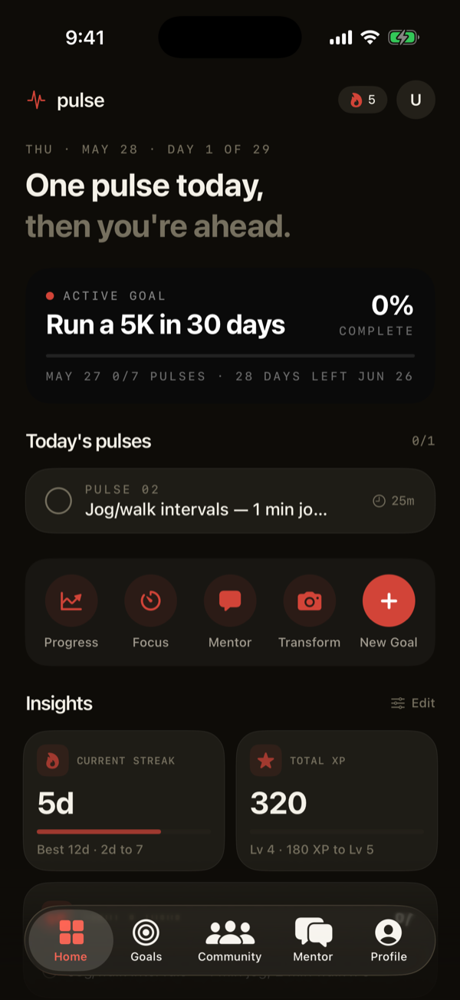
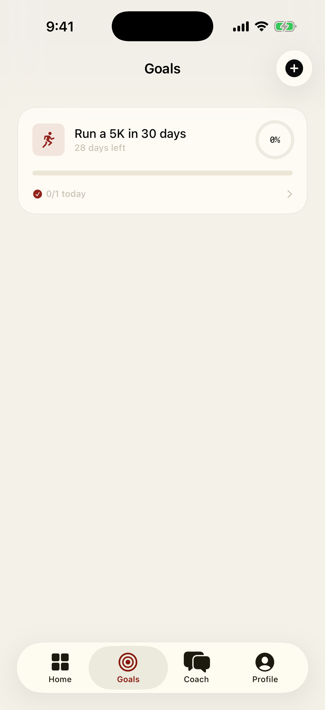
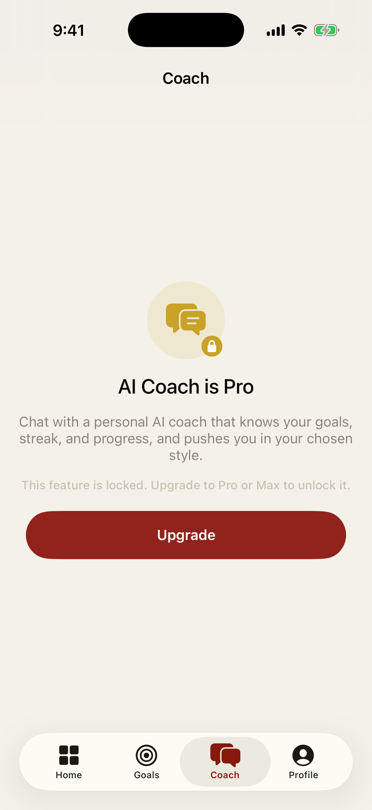
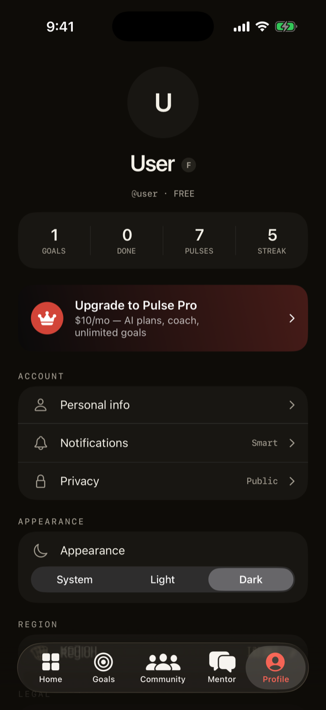
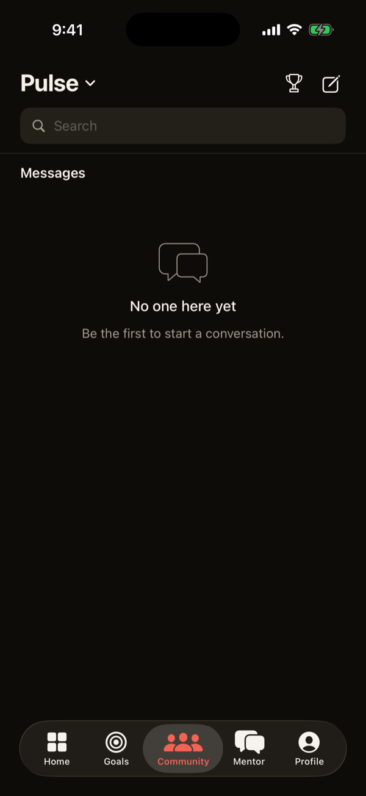

A coach. A plan.
A pulse.
Pulse turns any goal — getting fit, making money, learning a skill — into a daily, AI-built plan you actually follow. With a live form coach, meal scanning, and a mentor that never lets you drift.

How it works
From a vague ambition to a daily plan in under a minute.
Name your goal
Tell Pulse what you want and when — your time, your level, your obstacles.
AI builds the plan
Pulse writes a step-by-step roadmap of daily "pulses" tailored exactly to you.
Execute daily
Knock out one pulse at a time. Log proof, keep your streak, watch the bar fill.
Pulse adapts
Behind every plan, your AI mentor tracks progress and keeps you moving.
What Pulse does
Real AI, working on your actual goal — not generic tips.
AI builds your plan
Tell Pulse your goal and it writes a step-by-step roadmap of daily "pulses" tailored to your time, level, and obstacles.
Scan any meal
Snap a photo and get instant calories and macros, logged automatically. Pulse learns what you eat and builds your meal plan.
Live form coach
Your camera counts every rep and corrects your form in real time — so a push-up is a real push-up.
Transformation from a photo
Upload a before and goal photo and Pulse designs your workouts and meals to get you there.
An AI mentor
Chat with a coach that knows your streak, your progress, and pushes you in the style that works for you.
Streaks & community
Daily check-ins, a real streak, and a community to keep you accountable.
See it in action
A dark, focused interface built for execution. Swipe through real screens.




What you can build with Pulse
One engine, every kind of goal. Pick a type and Pulse shapes the plan around it.
Transformation
Upload a before + goal photo. Pulse builds your workout split and meal plan, with a live camera form coach and rep counting.
Make Money
Freelance, content, e-commerce, SaaS, and more — a revenue roadmap broken into daily money-moving actions.
Master a Skill
Photoshop, Spanish, guitar, coding — deliberate-practice drills and checkpoints that compound over time.
Big Project
Finish college, write a book, launch a business — multi-phase milestones with concrete deliverables.
Daily Habit
Build a habit with streak tracking, daily check-ins, and accountability that actually sticks.
Anything Else
Tell Pulse what you want in plain words and it figures out the roadmap. Free users start here.
Simple pricing
Start free. Upgrade when you want the AI to do the heavy lifting.
- Create a goal
- Add your own steps
- Daily check-ins
- Community access
- AI builds your plan & pulses
- Scan meals for nutrition
- Live form coach
- AI mentor
- Unlimited goals
- Everything in Pro
- 3× the AI usage
- Priority AI inference
- Verified badge
Subscriptions are billed through your Apple ID and renew monthly until cancelled. Manage or cancel anytime in the App Store.
Frequently asked questions
Everything about getting started, the AI, plans, privacy, and the community.
Getting started
What is Pulse?
Pulse turns any goal into a daily, AI-built plan of small actions called "pulses." Instead of just writing a goal down, you get a step-by-step roadmap, daily reminders, a streak, progress tracking, and an AI coach that keeps you moving.
Is Pulse free to use?
Yes. The Free plan lets you create a goal, add your own steps, keep a daily streak, and join the community. AI-built plans, meal scanning, the live form coach, and the AI mentor are part of Pulse Pro and Pulse Max.
What platforms is Pulse on?
Pulse is built for iPhone. An iPad-compatible build runs as well. There is no web app today.
How do I create my first goal?
Tap the New Goal button, pick a goal type (Transformation, Make Money, Master a Skill, Big Project, Daily Habit, or Anything Else), answer a few quick questions, and Pulse builds your plan.
What is a "pulse"?
A pulse is a single, concrete action for the day — small enough to actually do, specific enough that there's no guessing. Complete pulses to advance your goal, earn XP, and keep your streak alive.
How many goals can I have?
Free includes one active goal. Pulse Pro and Pulse Max include unlimited goals.
The AI
What can the AI actually do?
It builds your full step-by-step roadmap, scans meal photos for calories and macros, designs workouts and meal plans, coaches your form rep-by-rep through the camera, and acts as a mentor that knows your real progress.
How does meal scanning work?
Snap a photo of your meal and the AI estimates calories and macros, then logs it automatically and learns your patterns to shape your meal plan. Estimates are approximate, not a substitute for precise tracking.
How does the live form coach work?
Your front camera tracks your body with on-device pose detection, counts reps, and gives real-time form feedback so a rep only counts when you actually hit the position.
Can the AI be wrong?
Yes. AI output can be inaccurate, incomplete, or unsuitable for your situation. Treat it as informational and motivational — never as professional advice. See the Terms of Use.
Why can't I use AI features on Free?
AI plan generation, meal scanning, the form coach, and the mentor are Pro/Max features. On Free you can still create goals, add your own steps, keep a streak, and use the community. Free never runs the AI.
What does "Usage limit hit" mean?
You've reached your plan's AI usage for now, or the service is briefly rate-limited. Wait a moment and try again, or upgrade to Pulse Max for more usage. Pulse never fabricates a plan — if the AI can't run, it tells you.
Plans & billing
What's the difference between Pro and Max?
Pulse Pro ($10/mo) unlocks all AI features and unlimited goals. Pulse Max ($20/mo) includes everything in Pro plus 3× the AI usage, priority AI inference, and a verified badge.
How do I cancel my subscription?
Subscriptions are managed by Apple. Open the App Store, tap your profile, choose Subscriptions, select Pulse, and cancel anytime — you keep access until the end of the billing period.
Is there a free trial?
When offered, trials convert to a paid subscription unless you cancel before the trial ends. Any trial terms are shown at checkout.
How do refunds work?
Purchases are processed by Apple, so refunds are handled by Apple at reportaproblem.apple.com.
Will my price change?
Your current price holds for your billing period. Any material price change is disclosed before it takes effect for your subscription.
Privacy & data
What happens to my data?
Your goals sync to your private account so they're there across devices. You can export or permanently delete all of your data from inside the app at any time. Read our Privacy Policy.
Do you sell my data?
No. We never sell your personal information and never share it for cross-context behavioral advertising. The app uses no advertising or tracking SDKs.
What happens to my photos?
Photos you scan or attach are sent to the AI provider in transient memory for analysis only and are not retained on our servers after the response returns to your device. We do not perform biometric identification.
How do I delete my account?
Profile → Account → Delete Account permanently erases your account and associated data. You can also export your data first from Profile → Privacy.
Community & safety
What can I do in the community?
Share posts and photos, run polls, post stories, follow people, and message others directly — a focused social space for people chasing goals.
How do I report or block someone?
Long-press a member or open their chat and choose Report or Block. Reported and blocked users are removed from your view.
Is Pulse a substitute for medical or financial advice?
No. Pulse is a motivation and planning tool. Its AI can make mistakes and its guidance is general. Always consult a qualified professional before making health, medical, or financial decisions. See our Terms of Use.
Does Pulse guarantee I'll reach my goal?
No. Pulse improves your odds by giving you a clear plan and daily accountability, but outcomes depend on you. There's a chance, not a guarantee.
Still have a question? Visit Support or email s0533495227@gmail.com.
Get Pulse
Available on iPhone.
Download on the App Store(Link goes live when the app is published.)